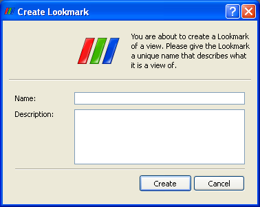
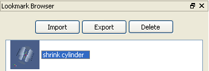
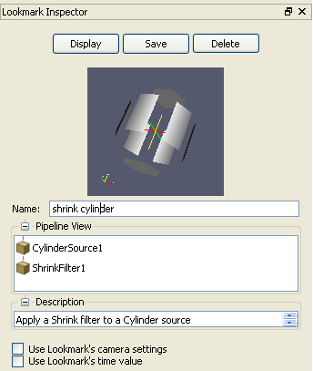

A lookmark may be created in one of two ways. Selecting "Create Lookmark" from the Tools menu will create a lookmark of the active view (highlighted in red), while pressing the lookmark button in the upper right corner of a render view will create a lookmark of that view. In either case, the user must then enter a (unique) name for the lookmark in the dialog box that appears and can (optionally) add a text description that will be stored with the lookmark. Clicking the Create button will store a copy of the lookmark. Lookmarks created in one ParaView session are available in subsequent ParaView sessions unless they are deleted. (Accessing stored lookmarks and deleting existing lookmarks are discussed later on in this page.)
The easiest way to access lookmarks is through the lookmark toolbar. It is located on the right side of the ParaView application window by default and is visible when lookmarks have been created. It contains an icon for each lookmark. Hovering your mouse over an icon in the toolbar will display the lookmark's name in a help balloon, while right-clicking an icon will give the user the option to delete that lookmark, edit its properties (by displaying the Lookmark Inspector), create a new lookmark (by displaying the "Create Lookmark" dialog), or display the Lookmark Browser. Left-clicking on an icon in the lookmark toolbar will apply that lookmark to the current source in the active view.

The Lookmark Browser is available from the right-click menu in the lookmark toolbar and from the View menu. It contains a list of all lookmarks available in the current ParaView session. Using the buttons at the top of the browser you may: export the selected lookmarks to a file, import lookmarks from a file to be added to the end of the browser, or delete the selected lookmarks. The "Ctrl" and "Shift" keys can be used in conjunction with the left mouse-button to select multiple items in the browser. Double-clicking an item will apply that lookmark to the selected view. Finally, if the Lookmark Inspector (see next section) is open at the same time as the Lookmark Browser, the inspector will display the properties of the currently selected lookmark in the browser.

The Lookmark Inspector (View menu, Lookmark Inspector) displays the properties of a lookmark. The lookmark that it displays is changed by either selecting a new item in the Lookmark Browser or by choosing "Edit" in the right-click menu of an item in the Lookmark Toolbar. From the lookmark inspector, the user can apply the lookmark in the active view or delete it entirely by using the buttons at the top. The Pipeline View portion of the lookmark inspector displays the filters that will be created when the lookmark is applied. The name and description of a lookmark can be edited, but the "Save" button must be pressed for these changes to take effect. The user also has control over two properties of how lookmark behave when they are applied. When a lookmark is created, the time value and camera properties in the selected view are stored in the lookmark. When the lookmark is applied, these saved values (time value and/or camera properties) can be restored. This behavior is controlled by two checkboxes at the bottom of the Lookmark Inspector. By default, neither of these values are applied with the lookmark. If the user marks or unmarks one of these checkboxes, then the Save button must be pressed for the changes to take effect next time the lookmark is applied.
This can be done from either the lookmark toolbar, inspector, or browser as described above. Like a filter, a lookmark requires input(s) and thus must be applied to one or more existing sources, depending on how many non-filter sources exist in the pipeline that has been stored in the lookmark. So how are its inputs determined? In the case of a lookmark with a single input, the source that is selected in the Pipeline Browser at the time the lookmark is applied is the input to the lookmark. If nothing is selected, the user is prompted to select the source from the pipeline to which the lookmark will be applied. If the lookmark contains two or more inputs, the user will be prompted automatically to specify which existing source to use for which input to the lookmark. The input to a lookmark can be either a reader, a source (i.e. an item from the Source menu), or a filter. Once the input is determined, the state of the lookmark's pipeline (which includes the pipeline filters, their display properties, and underlying properties of how ParaView is handling rendering) is simply loaded into the selected view. The parameters and display properties of the input(s) to the lookmark remain unmodified with one exception: point and cell arrays (attributes) that were turned on in the reader from which the lookmark was created are turned on in the reader of the pipeline to which it is applied. Lookmarks are applied to the selected view; thus the visibility of the sources they generate are off in all other existing views.